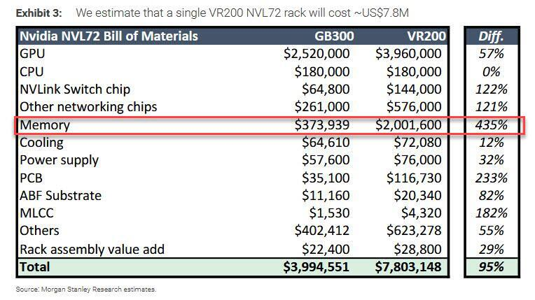
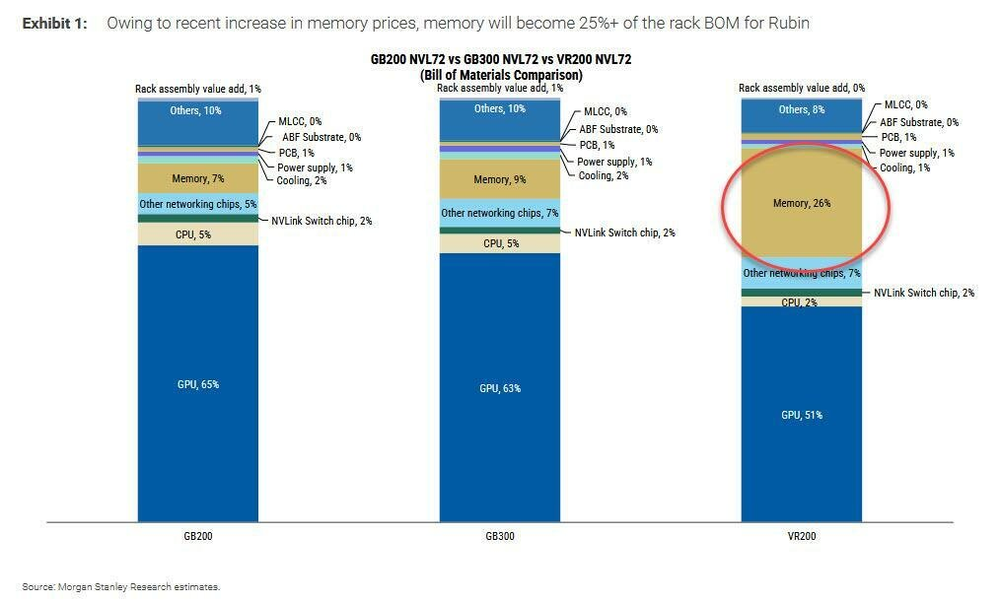

2026-06-23 | 摩根士丹利BOM拆解 + 用户提供市场资讯 | 宏观 & 专题研究
三个消息指向同一个核心：AI基础设施的投资回报率正在被重新审视，成本焦虑从GPU向整条供应链扩散。
| 因素 | HBM（高端） | DDR5（大宗） |
|---|---|---|
| 良率 | 低（12层堆叠，热管理极难） | 高（成熟工艺） |
| 研发投入 | 天文数字（每代HBM研发$数十亿） | 稳定（DDR5标准已成熟） |
| 客户议价 | NVIDIA一家独大，议价权极强 | 客户分散（服务器/PC/手机） |
| 利润率 | 低于预期（涨价能力被NVIDIA压制） | 稳定可预测 |
| 资本回报周期 | 3-5年（良率爬坡慢） | 1-2年 |
SK海力士是全球第二大HBM供应商（仅次于三星，和美光三足鼎立）。它的转向是一个强烈的周期信号：当最激进的HBM扩产者都开始犹豫，说明AI硬件链的"狂飙阶段"可能到顶了。
| 成本项 | GB300（Blackwell） | VR200（Rubin） | 涨幅 |
|---|---|---|---|
| GPU | $2,520,000 (63%) | $3,960,000 (51%) | +57% |
| Memory（内存） | $373,939 (9%) | $2,001,600 (26%) | +435% ⚠️ |
| NVLink Switch | $64,800 | $144,000 | +122% |
| 其他网络芯片 | $261,000 | $576,000 | +121% |
| PCB | $35,100 | $116,730 | +233% |
| CPU | $180,000 | $180,000 | 0% |
| 机架总成本 | $3,994,551 | $7,803,148 | +95% |
⚡ 一台VR200机架 ≈ $780万 ≈ 约5600万人民币

Exhibit 3：VR200 NVL72 单机架BOM详细金额拆解（$780万总成本，Memory +435%至$200万）（摩根士丹利）
GB300用的是HBM3e（8层堆叠），VR200升级到HBM4（12层堆叠），每GB成本暴增：
| 规格 | HBM3e（GB300） | HBM4（VR200） |
|---|---|---|
| 单颗容量 | 24GB | 36GB（预计） |
| 带宽 | ~1.2 TB/s | ~1.8 TB/s（预计） |
| 堆叠层数 | 8层 | 12层 |
| 单机架总内存 | ~1.5 TB | ~3 TB（预计翻倍） |
| 单机架内存成本 | $374K | $2,002K（5.4倍） |

Exhibit 1：GB200/GB300/VR200 NVL72 BOM材料成本占比对比（摩根士丹利）
高盛交易台昨日发布拆解报告，归纳五大冲击因素：
韩国监管层后悔5月27日刚放开的个股杠反ETF，正考虑加码限制措施。当前16只境内杠杆ETF规模$91亿 + 南方东英2倍做多海力士/三星ETF合计$210亿，每日delta对冲流量约$59亿（SK海力士$28亿占ADVT 34%，三星$17亿占25%），监管收紧将导致被动减仓。
韩国立法者提议将未实现收益纳入综合所得税，虽然针对高净值人群，但零售投资者今年已累计买入$410亿，保证金贷款达$260亿历史新高——征税担忧直接触发散户清仓。
最大养老金基金过去四天净卖出约$8.45亿，因其国内股票持仓已超过28.8%的配置上限。养老金延续净卖出趋势。
| 外资 | 境内机构 | 散户 | |
|---|---|---|---|
| KOSPI | -$31.2亿 | -$20.8亿 | +$51.3亿 |
| SK海力士 | -$9.32亿 | +$7.89亿 | +$1.29亿 |
| 三星电子 | -$2.83亿 | -$0.76亿 | +$3.43亿 |
KOSPI暴跌是AI叙事动摇在韩国市场的集中释放：SK海力士HBM4成本爆炸（昨日分析的+435%）+ Rubin预测下修 + 杠杆ETF连锁平仓 = 完美风暴。高盛交易台称"这不是孤立冲击，而是多因素汇聚的确认信号"。
| 指标 | 2026E | 2027E | 2028E |
|---|---|---|---|
| 营收（亿） | 15,754 | 25,306 | 38,528 |
| 净利润（亿） | 630 | 925 | 1,257 |
| EPS | 3.18 | 4.66 | 6.34 |
| 毛利率 | 6.5% | 5.8% | 5.2% |
GS看多逻辑：① 美国CSP资本开支2026E/2027E +76%/+35% YoY；② 技术迭代（GPU底座→机架级AI服务器+CPO交换机+液冷）抬高壁垒，FII份额持续扩张；③ 现金周转周期从2023年71天压至2025年39天，1Q26经营现金流达250亿。TP 107.2基于23x 2027E P/E，与同行平均PEG 0.9x一致。
| 指标 | 2026E | 2027E | 2028E |
|---|---|---|---|
| 营收（亿） | 2,042 | 2,509 | 3,049 |
| 净利润（亿） | 35.9 | 43.5 | 56.5 |
| EPS | 2.45 | 2.96 | 3.84 |
| 毛利率 | 5.5% | 5.3% | 5.2% |
① AI服务器市占率从高位持续下滑（GPU→国产芯片模型转换期，地缘政治驱动CSP客户转向本地芯片）；② 中国CSP资本开支增速放缓（2027E仅+20%→2028E仅+10%）；③ 估值透支：12M forward PE已高于5年平均，GS目标PE 21.1x对应PEG 0.8x，GS 2027E盈利比Bloomberg共识低9%。
今日三条消息（SK转向DRAM + MS BOM数据 + Rubin预测下修）共同指向：AI硬件链的"成本焦虑"正在从GPU向整条供应链扩散。
这是第一次有系统性的数据（MS BOM）显示AI硬件成本增速远超预期，且供应链龙头（SK海力士）用脚投票。
对大宗商品的含义：铜/锂/镍的"AI成长溢价"面临重估，但这是预期调整而非需求崩塌，时间窗口3-12个月，短期主要是情绪传导。
下一个观察节点：云厂商（Meta/微软/谷歌）Q2财报季的资本开支指引（7-8月），将验证"AI成本危机"是短期调整还是趋势性放缓。
—— 数据来源：高盛KOSPI暴跌拆解报告(2026.6.23) · 高盛大中华科技ODM研报(2026.6.24) · 摩根士丹利半导体研究 · 用户提供市场资讯图片 · 彭博社 ——